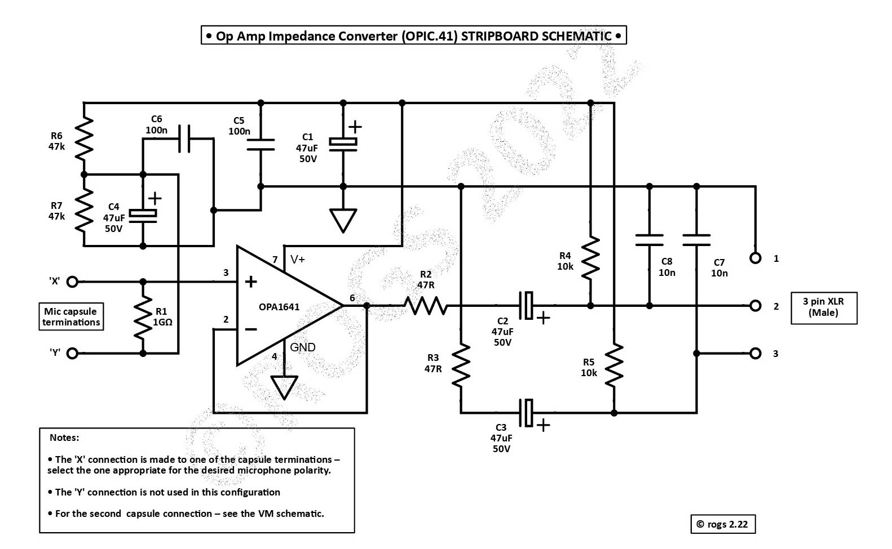
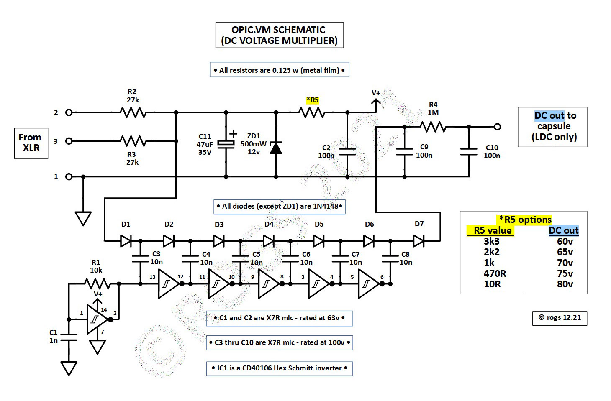

You might like to check the project notes for the newer OPIC 44 version of the LDC circuit, which has the same specifications, but is slightly simpler to build (It has fewer components!)
• Just click on the image below for a PDF of the OPIC41 project details •

The schematic above shows the audio circuitry required to interface a conventional (non-electret) large diameter condenser microphone capsule - 'LDC' - to a microphone pre-amp fitted wih 48v phantom power.
The circuitry includes an impedance converter - utilising an OPA1641 op-amp - and appropriate output coupling capacitors and resistors.
This very simple interface uses the single op-amp as a unity gain non inverting buffer amplifier, powered by 48v phantom power from the mic pre-amp.
The circuit has a low quiescent current requirement - around 1.8mA - has very low distortion, and is only marginally noisier than equivalent impedance converters which use discrete FET inputs.
The stripboard layouts are designed to fit into that common 'donor body' - the BM800/NW700 - but also work well in Neumann 'style' clone bodies... (Click on the image in the header at the top of the page to see more details).
( Alternatively, you may prefer to build an OPIC41 mic using a PCB rather than stripboard...Hobby microphone builder Mic Scharf has developed a PCB for this version of the project,
which you can obtain from
HERE)
In this 'LDC' configuration, a separate stripboard is also required to generate the external capsule DC polarisation voltage. The schematic for that circuit is shown below.
• Just click on the image below for a PDF of the project details •

As suggested, just click on either image to download a PDF which contains the schematics, circuit descriptions, and stripboard layouts for all the circuitry required....